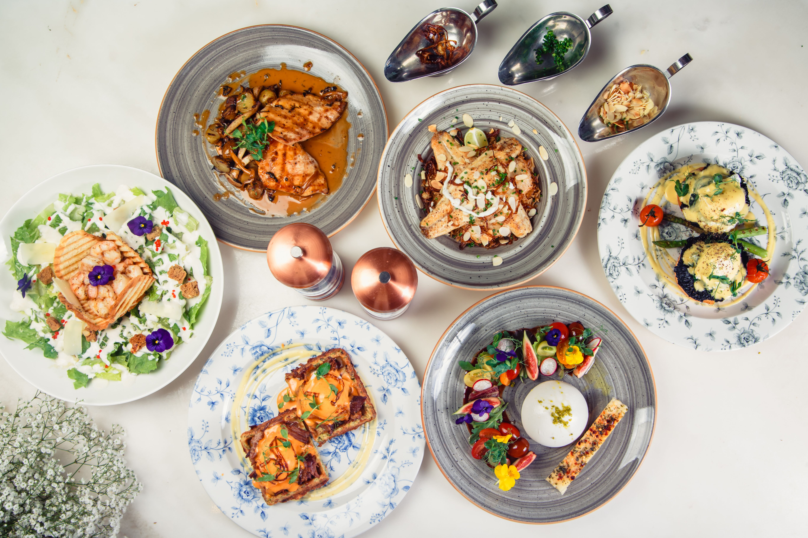
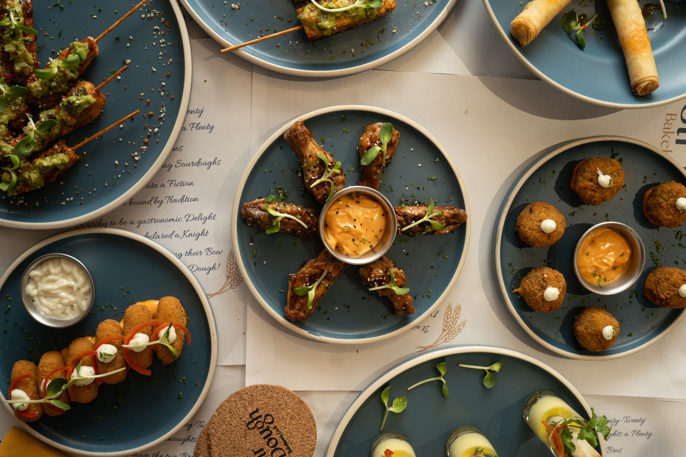
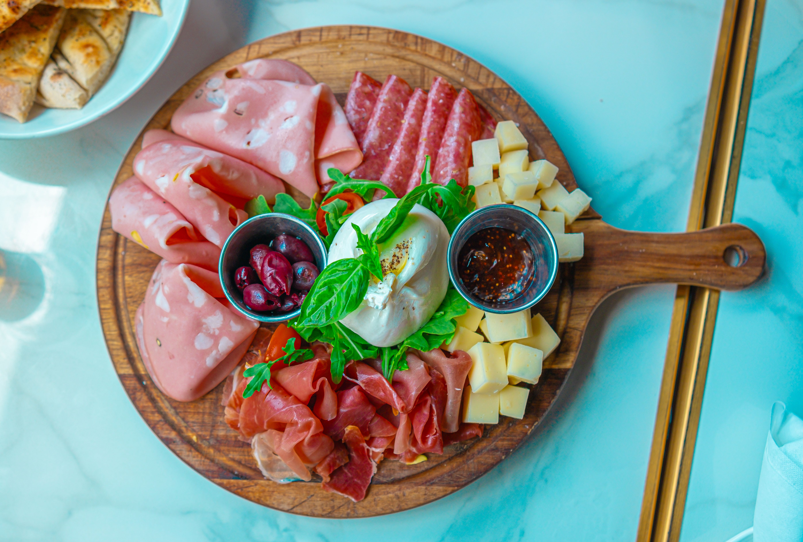
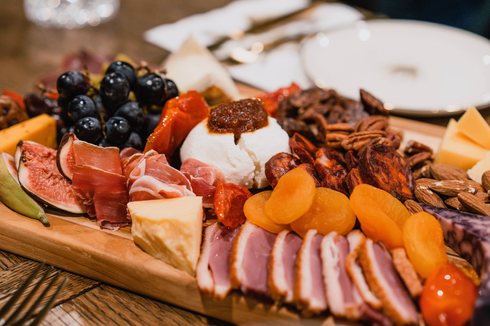
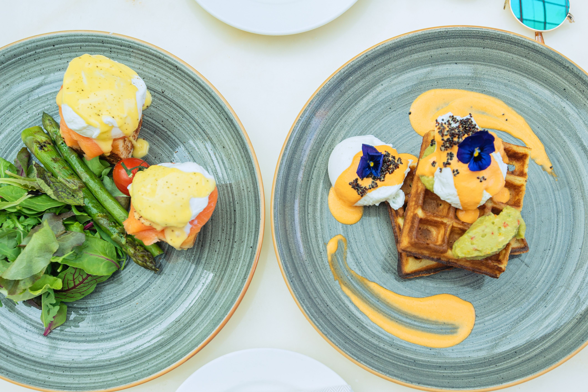

Fresh Flavours, Every Day
Welcome to The Daily Crave, where delicious food meets creativity and passion. We bring together fresh ingredients, simple recipes, and flavours from around the world to inspire your next meal.
Whether you're looking for a quick breakfast, a satisfying lunch, a family dinner, or a sweet dessert, our collection offers recipes that are easy to follow and enjoyable to prepare for every occasion.
We believe great food brings people together. That's why we're dedicated to helping you discover new flavours, improve your cooking skills, and create memorable moments around the table, one delicious bite at a time.

Gourmet Appetizer Collection
A curated selection of elegant, bite-sized appetizers artfully arranged on blue plates, perfect for high-end catering or restaurant menus.

Artisan Charcuterie Board
A premium spread featuring thinly sliced cured meats like mortadella, salami, and prosciutto, complemented by a fresh, creamy burrata cheese centerpiece, cubed aged cheeses, olives, and a rich fig jam.

Artisan Cheeses
Creamy burrata topped with fig or onion jam, alongside wedges of aged cheddar.

Savory Waffles
Crispy waffles topped with poached eggs, a vibrant, creamy orange sauce, edible flowers, and a side of smashed avocado.
About Us
Welcome to our food website! We are passionate about bringing you delicious meals, easy recipes, and fresh food ideas for every occasion. Whether you're looking for a quick breakfast, a tasty lunch, or a special dinner, you'll find something to enjoy here.
Our goal is to inspire people to cook, eat well, and discover amazing flavours from around the world. We carefully share recipes and food tips that are simple, enjoyable, and suitable for everyone.
Thank you for visiting our website. We hope our food inspires you to create memorable meals and enjoy every bite!